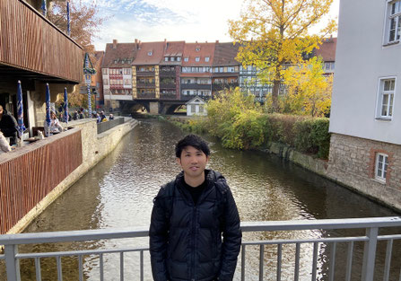

Shunsuke Shigaki (志垣 俊介)
生物のような知的に振舞うことができるロボットシステムの実現を目指し，工学と生物学の両面から研究を進めています！
Research Fields
Contact
国立情報学研究所 National Institute of Informatics
情報学プリンシプル研究系 Principles of Informatics Research Division
Email: shigaki_[at]_nii.ac.jp